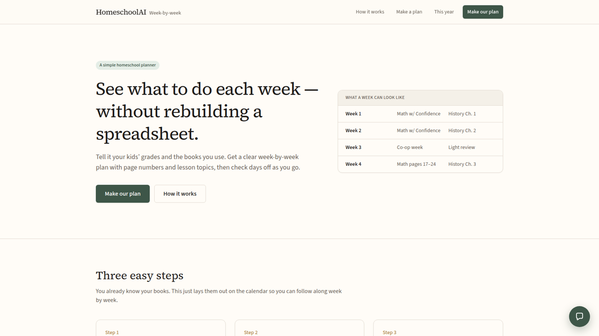

Personal Project
Homeschool AI Scheduler
A public week-by-week homeschool planner. Tell it the grades you teach and the books you already use. It lays the year out so you can follow along instead of rebuilding a spreadsheet.

What It Does
Homeschool planning usually lives in a spreadsheet that has to be rebuilt every time the year, the kids, or the books change. This app takes the books you already own and spreads math, history, grammar, and the rest across the school year.
Each week shows page numbers and lesson topics. You can check days off as you go, leave a note, and lighten weeks that are already full (co-op, trips, or testing). Start from a sample year and change anything that does not match your family.
How It Works
Kids and books
Pick every grade you are teaching, the curricula you already use, and when the school year starts and ends.
Week-by-week plan
Lessons are mapped onto the calendar with page numbers and topics, including lighter weeks when you mark them busy.
Check off as you go
Open a day, mark what you finished, leave a note, and add a photo if you want. Change the plan and make a new one anytime.
Try it immediately
No account required. Open the live app, start from a sample year, and generate a plan in the browser.